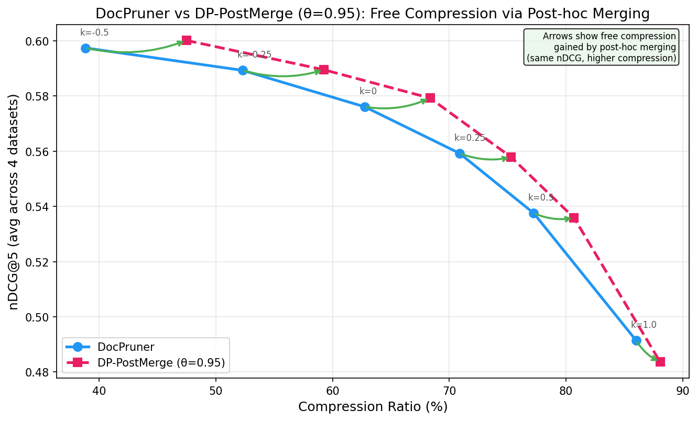

Logo
DP-PostMerge: Free Compression via Post-hoc Merging
for Multi-Vector Visual Document Retrieval
Logo
Multi-vector visual document retrieval (VDR) stores hundreds of patch embeddings per page — state-of-the-art quality, but prohibitive storage.
DocPruner (Yan et al., 2025) prunes low-importance patches via EOS attention thresholding. Works well, but permanently discards information.
Key question: After pruning, can we squeeze out more compression from the kept patches — for free?
A simple two-stage approach that extends any pruning method with a post-hoc merge step:
2. Compute pairwise cosine similarity among kept patches
3. Greedy merge: highest-attention patch absorbs neighbors (cos > θ)
via attention-weighted average
Result: Same nDCG, higher compression for free
DocPruner selects by importance, not redundancy. Kept patches in dense embedding regions are often near-identical. Post-hoc merging exploits this redundancy — collapsing similar patches into attention-weighted averages without losing retrieval signal.
This is orthogonal to the pruning threshold: it works at every k value, giving free compression on top of any DocPruner configuration.
(generate at
qrcode-monkey.com)

| k | DocPruner | Compress. | DP-PostMerge | Compress. | Free Δ |
|---|---|---|---|---|---|
| −0.50 | 0.598 | ~38% | 0.600 | ~48% | +10% |
| −0.25 | 0.589 | ~52% | 0.590 | ~59% | +7% |
| 0.00 | 0.577 | ~62% | 0.579 | ~69% | +7% |
| 0.25 | 0.560 | ~71% | 0.558 | ~76% | +5% |
| 0.50 | 0.538 | ~77% | 0.537 | ~81% | +4% |
| 1.00 | 0.491 | ~86% | 0.484 | ~89% | +3% |
At every k value, DP-PostMerge achieves comparable nDCG@5 while compressing 3–10% more. The gain is largest at moderate compression where more redundancy exists among kept patches.
DocPruner filters by importance, not redundancy. Kept patches in dense embedding regions are near-identical. Merging them loses almost no signal but reduces vector count.

- Zero training cost — no learned parameters, no optimization
- Model-agnostic — works on any multi-vector retrieval model
- Composable — applies on top of any pruning method
- Single hyperparameter — cosine similarity threshold θ
- Negligible runtime — pairwise cosine on already-pruned patches
- DP-PostMerge provides 3–10% free compression on top of DocPruner at every operating point, with negligible quality loss
- Importance ≠ redundancy — DocPruner's attention threshold is near-optimal for selection, but leaves exploitable redundancy among kept patches
- Generalizes without tuning — consistent gains on both ViDoRe-V2 (4 datasets) and ViDoRe-V3 (7 datasets)
- Practical recommendation: Always apply post-hoc merging after pruning — it's free compression with no downside
| Property | Value |
|---|---|
| Model | ColQwen2.5 (vidore/colqwen2.5-v0.2) |
| Benchmarks | ViDoRe-V2 (4 datasets), ViDoRe-V3 (7 datasets) |
| Metric | nDCG@5 |
| Baseline | DocPruner (6 k values) |
| Threshold θ | 0.93–0.95 (cosine similarity) |